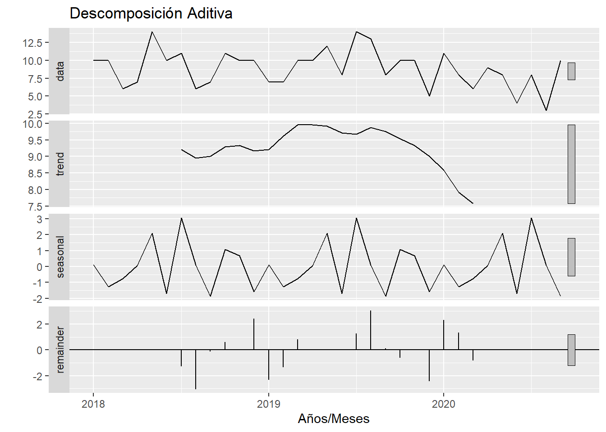

Capitulo 5 Descomposicion
La descomposición de series temporales es una técnica utilizada en el análisis de series temporales para descomponer una serie temporal en sus componentes basicos constituyentes, con el objetivo de entender mejor la estructura y los patrones subyacentes en los datos.
Los componentes básicos de una serie temporal que pueden ser descompuestos son:
Tendencia: Es la dirección general en la que los datos están cambiando con el tiempo. Puede ser ascendente, descendente o seguir un patrón más complejo.
Estacionalidad: Son variaciones periódicas o cíclicas en los datos que se repiten en intervalos fijos de tiempo, como diarios, semanales, mensuales o anuales. Estas variaciones están asociadas con factores estacionales, como las estaciones del año o eventos recurrentes.
Ciclo: Son variaciones que no siguen un patrón estacional específico y pueden ser de más largo plazo que las variaciones estacionales. Los ciclos pueden estar asociados con fluctuaciones económicas u otros fenómenos que se repiten en intervalos irregulares.
Componente aleatorio o residual: Es la parte de la serie temporal que no puede ser explicada por la tendencia, la estacionalidad o el ciclo. Representa la variabilidad aleatoria o el ruido en los datos.
- Preparación de los datos
Este código carga datos de nacimientos y los agrupa para calcular el número total de nacidos vivos por fecha teniendo en cuenta los partos dobles o simples.
## Warning: package 'dplyr' was built under R version 4.3.3##
## Attaching package: 'dplyr'## The following objects are masked from 'package:stats':
##
## filter, lag## The following objects are masked from 'package:base':
##
## intersect, setdiff, setequal, unionDatosNacidos <- read.csv(file = "data/Nacidos_Vivos_en_Hospital_Manuel_Uribe_Angel_20240418.csv")
DatosNacidos$FECHA <- substr(DatosNacidos$FECHA,1,10)
DatosNacidos$FECHA <- as.Date(DatosNacidos$FECHA, format = "%m/%d/%Y")
agrupnacidos <- DatosNacidos %>%
group_by(FECHA, MULTIPLICIDAD.EMBARAZO) %>%
summarize(NumeroPartos = n(), .groups = 'drop')
agrupnacidos$NumeroNacidos <-
ifelse(agrupnacidos$MULTIPLICIDAD.EMBARAZO == "DOBLE",agrupnacidos$NumeroPartos*2,agrupnacidos$NumeroPartos)
agrupnacidos_2 <- agrupnacidos %>%
group_by(FECHA) %>%
summarize(NumeroNacidos=sum(NumeroNacidos), .groups = 'drop')
dfdesc <- agrupnacidos_2
print(dfdesc)## # A tibble: 1,976 × 2
## FECHA NumeroNacidos
## <date> <dbl>
## 1 2018-01-01 10
## 2 2018-01-02 10
## 3 2018-01-03 6
## 4 2018-01-04 7
## 5 2018-01-05 14
## 6 2018-01-06 10
## 7 2018-01-07 11
## 8 2018-01-08 6
## 9 2018-01-09 7
## 10 2018-01-10 11
## # ℹ 1,966 more rowsSe filtran los datos desde la fecha inicial y se crea una serie de tiempo.
# Filtrar los datos para incluir solo las fechas desde octubre de 2021
dfdesc_filtrado <- dfdesc[dfdesc$FECHA >= as.Date("2018-01-01"), ]
# Crear la serie de tiempo usando la función 'ts'
dfts2 <- ts(dfdesc_filtrado$NumeroNacidos, start = c(2018, 01), end = c(2020, 09), frequency = 12)
# Imprimir la serie de tiempo
print(dfts2)## Jan Feb Mar Apr May Jun Jul Aug Sep Oct Nov Dec
## 2018 10 10 6 7 14 10 11 6 7 11 10 10
## 2019 7 7 10 10 12 8 14 13 8 10 10 5
## 2020 11 8 6 9 8 4 8 3 10En este codigo se observa la descomposición aditiva la cual es un método que descompone una serie de tiempo en tres componentes principales: tendencia, estacionalidad y residuos. La tendencia representa la dirección general en la que se mueve la serie de tiempo a largo plazo. La estacionalidad representa los patrones repetitivos o cíclicos en la serie de tiempo que se repiten a intervalos regulares. Los residuos representan las fluctuaciones aleatorias o no sistemáticas que quedan una vez que se han eliminado la tendencia y la estacionalidad.
## Warning: package 'forecast' was built under R version 4.3.3## Registered S3 method overwritten by 'quantmod':
## method from
## as.zoo.data.frame zoolibrary(ggplot2)
descomposicion_aditiva<-decompose(dfts2,type = "additive")
autoplot(descomposicion_aditiva,main="Descomposición Aditiva",xlab="Años/Meses")
descomposicion_multiplicatica<-decompose(dfts2,type = "multiplicative")
autoplot(descomposicion_multiplicatica,main="Descomposición Multiplicativa",xlab="Años/Meses")
La diferencia principal entre la descomposición aditiva y la multiplicativa radica en cómo se modelan las tendencias y las estacionalidades en una serie de tiempo.
Descomposición Aditiva:
En este enfoque, se supone que los componentes de tendencia y estacionalidad se suman para formar la serie de tiempo original.
La tendencia se modela como una función lineal o no lineal que cambia constantemente a lo largo del tiempo.
La estacionalidad se modela como fluctuaciones fijas y constantes alrededor de la tendencia a lo largo del tiempo.
La descomposición aditiva es apropiada cuando las variaciones en la serie de tiempo son aproximadamente constantes en magnitud a lo largo del tiempo.
Descomposición Multiplicativa:
En este enfoque, se supone que los componentes de tendencia y estacionalidad se multiplican para formar la serie de tiempo original.
La tendencia se modela como una función multiplicativa que cambia a lo largo del tiempo.
La estacionalidad se modela como fluctuaciones proporcionales a la tendencia a lo largo del tiempo.
La descomposición multiplicativa es apropiada cuando las variaciones en la serie de tiempo cambian en magnitud a medida que el nivel de la serie de tiempo aumenta o disminuye.
Cuando no hay diferencias significativas entre la descomposición aditiva y la multiplicativa, significa que ambos enfoques producen resultados similares y que la elección entre ellos no afectará significativamente la interpretación o el análisis de la serie de tiempo.
Esto puede ocurrir en casos donde:
La serie de tiempo exhibe patrones de variación relativamente simples y estables a lo largo del tiempo.
La tendencia y la estacionalidad no interactúan de manera compleja entre sí. Los cambios en la serie de tiempo son consistentes y no muestran fluctuaciones inusuales o extremas.
En la grafica se observa un leve patron estacional
ts.plot(descomposicion_aditiva$seasonal,descomposicion_aditiva$random, col=c("blue","red"))
title(main = "Descomposición Aditiva: Componentes Estacionales y Aleatorios", line = 1)